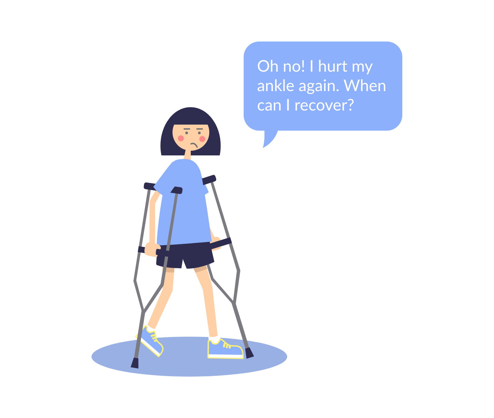

After a severe foot or leg injury, how to recover faster and avoid reinjury during the recovery? SoleMate is here to solve this problem! It is a product composed of a pair of smart shoe insole and a mobile app. The smart insole monitors weight applied to the injured foot, while the app provides real time feedback to patients.
SoleMate is developed by SoleMate Solutions, a startup incubated at The Basement UC San Diego. I joined them in November of 2018 as a UI/UX and graphic designer. I visualized product concepts and helped the team enter the finale in Arizona State University Pitch Competition. Working alongside my fellow designer, I went through an iterative design process and eventually, came up with a high-fidelity prototype of the mobile app.
The Team
Kristine Khieu
Surabhi Kalyan
Jiayu Luo
Roy Zhang
Steven Tran
Patrick Pei
My Role
UI/UX Design, including but not limited to wireframe, prototypes, user testing, and visual design.
Ideate with team leaders, developers, and UX designers for design and marketing solutions.
Concept & Background
The Problem
Emily is a 15-year-old girl in the school basketball team. One day, she broke her ankle during the training and was sent to a physical therapy center for recovery. Except regular examinations in clinic, she spent most time recovering without being monitored by her physical therapist. She had an urgent need to recover and return to training, but unfortunately, she reinjured herself during at-home exercise.
In fact, this case is not occasional. Every year, 5.5 million patients return to hospitals for the exact same problem, and the major cause is poor rehabilitation. Usually, patients with lower-extremity injuries are required by their physical therapists to apply a certain amount of weight to the injured side, but it is challenging for them to follow the instruction, as they hardly receive any feedback after clinic. When they walk out of the hospital door, care stops there.

Our Solution
We present patients with SoleMate, a product composed of two parts, a mobile app and a pair of smart shoe insoles. The mobile app provides patients with real-time feedback of how much weight they are putting on their injured foot, based on data transmitted from pressure sensors on the smart insoles. Thereby, patients are able to adjust the way they walk during the recovery process. The app summarizes patients' activity data and present to the physical therapists, so that patients can receive useful advice from their physical therapists remotely and in person.


Smart shoe insole with three pressure sensors embeded
Feature Highlights
Onboarding
Users create new accounts, put in their personal information, and add rehabilitation plan. The rehabilitation plan can have multiple sessions. Users will be asked to put in their goal body weight (the percentage of body weight that users should apply to their injured lower extremities per doctors' instructions) when adding each session.

Statistics & Device Status
The Home page has two parts, users' activity statistics and the status of smart insoles. On the Activity page, the average percentages of body weight applied by users are displayed in linear charts. Users can also find information about their current rehabilitation session. On the Insole page, the battery condition and Bluetooth connection status are provided.

Real-Time Feedback Testing
This function is aimed to help users to learn the appropriate way of walking. If the weight that users apply to their injured side exceeds the target range, users will receive sonic feedbacks immediately. The summary and tips will be provided after each excercise and test.

The App Design Process
We had partnership with Rady Children's Hospital and received professional advice from the physical therapists. We were able to comprehensively understand the process of physical therapy treatment and to build an app that satisfy users’ need in the real world.
Storyboard

Information Architecture
The trickiest thing about this step was to decide what to include in the onboarding. While we aimed to explain our functions to first-time users and to guide them fill in their personl information, we did not want to burden them with overwhelming tasks at once. Instead of using a few pages to explain the app during the onboarding, we decided to provide clear instructions when users start to use each core function in the app.

Low-Fidelity Prototype

Usability Testing
We conducted two rounds of usability tests, one with the low-fidelity prototype and one with the high-fidelity one. Each time, we selected 6-8 participants. Half of them had experienced lower-extremity injuries before, and the other half had not. In this way, we acquired insights from participants who are familiar with the rehabilitation process and those who are not as well.
We found several problems after the first round. The first problem was that the information on Activity page was a little overwhelming. To tackle this problem, we split the information on that page and put them in two "cards," the first one showing statistics and the second one showing the current rehabilitation plan. We put "percentage within target range" to the second page of the first card, since this information has lower priority.

Based on the findings, we added tips to the Result page. Although numbers are important in terms of statistics, users have no idea how to interpret the numbers. In contrary, textual tips about how to improve users' rehabilitation activities are more straighforward and helpful for them

Visual Design
When making decision on visual design, we thought of SoleMate as a person, and each of us chose a few words to describe the characteristics of it. In general, we considered it to be tranquil, professional, and friendly. Then we followed these characteristics to design the style guide that includes colors, shapes, fonts, and illustration style.

Takeaway
Designing and developing SoleMate in a team was very inspiring and fruitful. I realized that the most significant qualities for a designer is the ability to always clearly see the ultimate design goal and the willingness to actively communicate with the rest of the team. The two founders of SoleMate Solutions are very confident about what they want for every step of the project. At first, I strictly followed their requirements, but later I found out that their opinions are not always helpful for achieving their goals. Therefore, I frequently communicated with them to comprehend their real goals and proposed them with my creative design solutions. I was not helping them to finish a bunch of trivial tasks but to assist them in reaching their ultimate goals.


© 2020 Jiayu Luo.